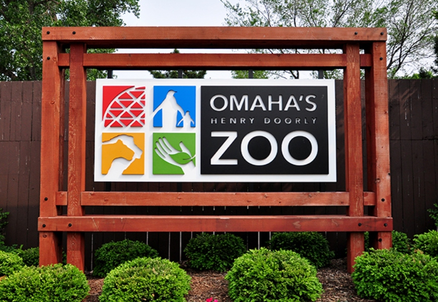

The zoo began in 1894 as Riverview Park Zoo. Four years later, it had over 120 animals. In 1952, the Omaha Zoological Society was created with aims to improve the zoo. In 1963, Margaret Hitchcock Doorly donated $750,000. She stipulated that the zoo be renamed in memory of her late husband, Henry Doorly, chairman of the World Publishing Company. Union Pacific helped the zoo lay down 2.5 mi (4.0 km) of track in 1968 and the inaugural run of the Omaha Zoo Railroad was made on July 22, 1968
